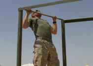
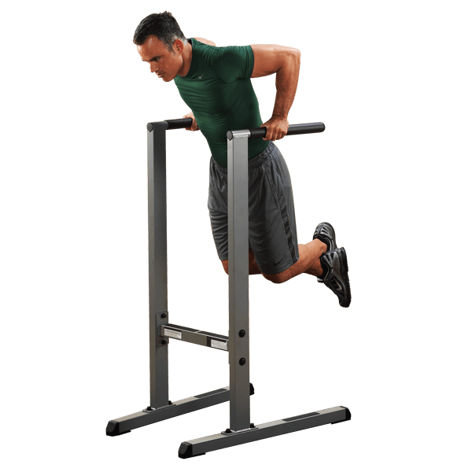
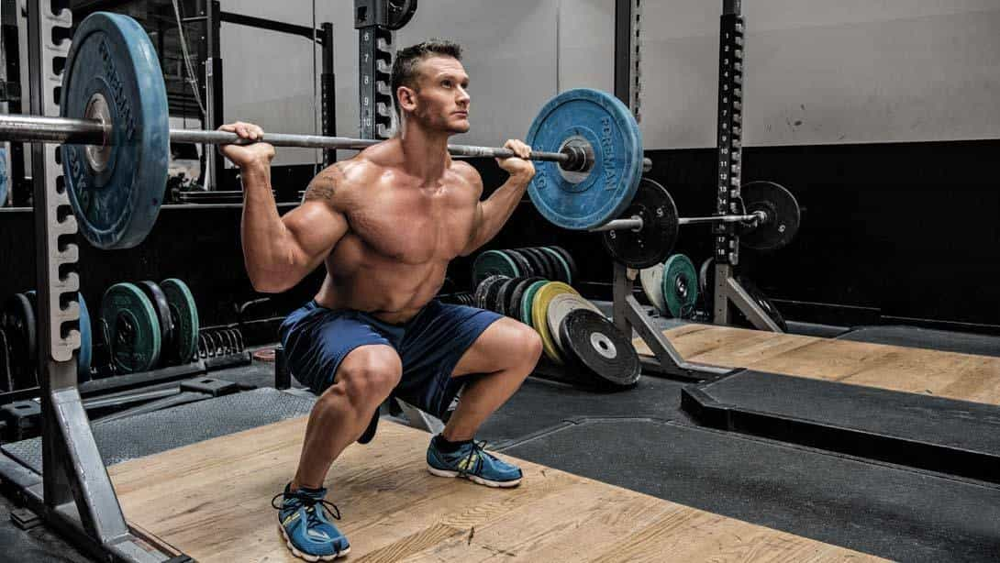
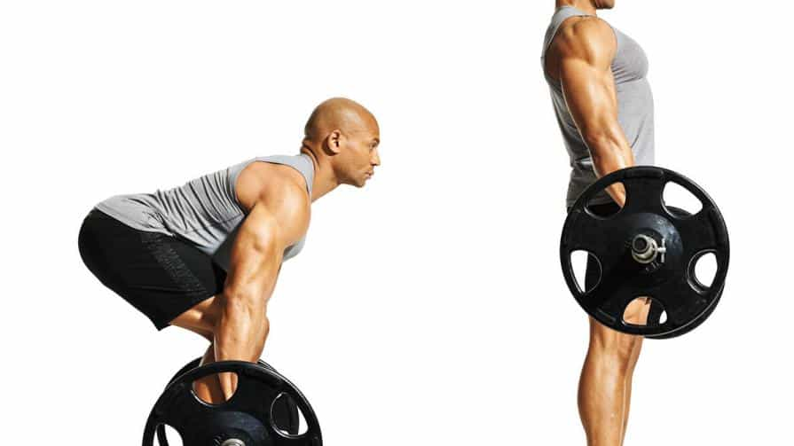
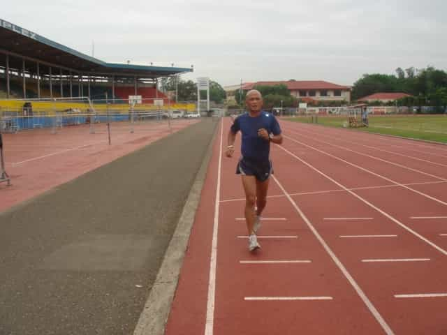
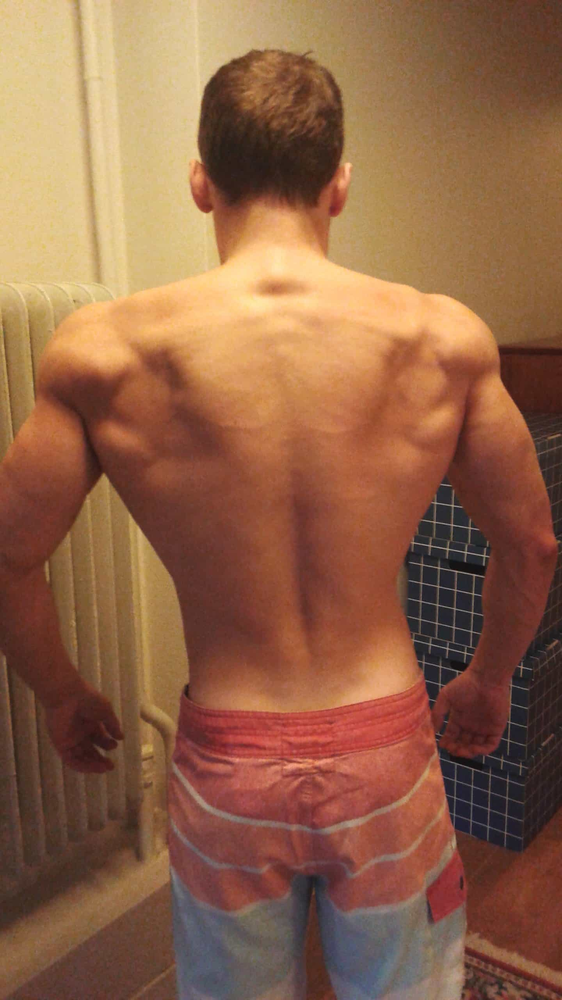

Physical fitness is often discussed with the aim to create an all-encompassing body program, in conjunction with proper diet, in order to build muscles and become stronger and leaner (although not necessarily all at the same time).
What many men should be aiming for, in my opinion, is to find an easy way to measure one’s overall level of fitness with regard to strength and stamina.
About ten years ago, a popular fitness and bodybuilding magazine described measurements for the seriously trained to aim for. A truly fit guy should be able to, at least one time, lift 1.5 times his body weight in bench press, pull-ups and dips, two times the bodyweight in squats, and 2.5 times one’s body weight in dead lifts. Further, he should also be able to run three kilometers on a track-and-field track below 12 minutes, in order to prove his broader stamina and athleticism.
While all of these measurements are worth to aim for, some revisions need to be done so that more men can be included and make the measurement process easier to carry through. Therefore I suggest the following measurement structure…
1. Bench press: as many reps as you can manage with your bodyweight

Make a regular bench press exercise with your current bodyweight. Full movement. The barbell should touch your chest at the bottom.
2. Pull-ups (wide grip): as many reps as you can manage with your bodyweight

Use a broad grip and make pull-ups with full movement. Make sure the chin is above the bar, and the arms and back are fully streched at the bottom position.
3. Dips: as many reps as you can manage with your bodyweight

It’s important that you have your upper body in a 90 degrees position and stretch the entire elbow joint at the top. Otherwise it’s cheating. Full-movement dips should be heavy.
4. Squats: as many reps as you can manage with your bodyweight

A full movement with a 90 degrees position at the bottom is important. Make sure not to lock the knee-joint at the top. Whether or not you want to rest for a second at the top between each rep is up to you.
5. Dead lifts: as many reps as you can manage with your bodyweight

The conventional form is to have your arms slightly outside your legs and knees. Make sure to bend the knees so that your quads/thighs are helping you complete the movement, but with a relatively light weight it may be the case that your back, forearms and hamstrings are doing the bulk of the job.
5. 3 kilometers (8.5 laps on a 400 meter standard track-and-field track): run as fast as you can and measure your time properly

Make sure to have a clock or smart phone to measure your time and keep track of the time while running. Perhaps you should have an appropriate pre-determined average lap time as guidance.
The benefits
There are multiple benefits with having this approach, of which one is that much more men can manage to complete at least one repetition with their own particular bodyweight in all of these exercises.
Moreover, a man does not have to be upset about being “worthless” because he has one or several flaws and shortcomings. For instance, I am very strong in bench press, dips, and pull-ups relative to my bodyweight, and I have run at 11:30, but can only do about 1.8 in squats and 2.2 x bodyweight in dead lifts. Since I don’t care about being particularly strong in these two exercises, but want to train legs and back properly, I still want to perform the exercises and make at least some improvements. Therefore it’s useful to have relative instead of absolute goals to strive and aim for. The power of repetitions lies in its easily measured and manageable physical process.
How to get there
It’s important that you have a decent training and diet program to begin with, and train the entire body at an appropriate local gym at least once every week (perhaps split up into three or four days of exercise throughout every week). Further, it’s important that you include all of these exercises and put extra emphasis on all of them several months before you decide to measure your results (unless you’re not already in very good shape, then maybe a couple of weeks are enough).
Moreover, it’s very likely that strivings such as these overlap with the process of losing body fat. It’s hard to be able to do more than a few reps in any of these exercises, besides perhaps squats and dead lifts, if you have 15-25% of body fat. In a perfect world, you should have 10% or less, which will enable you to perform maximum of your ability, but let’s say 12-18% may also take you quite far.

Yours truly in decent shape and ready to make some good results
Therefore you should gradually lose body fat, and practice the above-mentioned running distance as part of the diet and training process, yet continue to lift as heavy as you can relative to your bodyweight. Needless to say, training and nutrition are equally important.
Once you’re ready, you only need to be in the gym and make some kind of notes whenever you perform and measure your strength in all of the exercises listed above. And you’ll also need a proper track-and-field track, which are seldom that hard to find, as they are often part of the local public spaces. It doesn’t have to be of top notch quality to be useful.
When you have performed the fitness measurement program, you aim for to make individual improvements within a realistic timeframe, and perhaps measure it another time 6 or 12 months later. Whether or not you want to compare yourself to others, and perhaps have a training partner is up to you, but the measure and level you happen to reach is always individual. Hence, do mainly compete against your own ability and strive for realistic improvements, without succumbing to a mediocrity trap. Good luck.
Read More: 3 Ways The Mind Sabotage Your Fitnes Goals